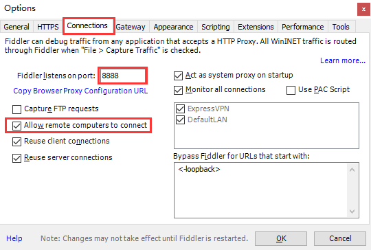
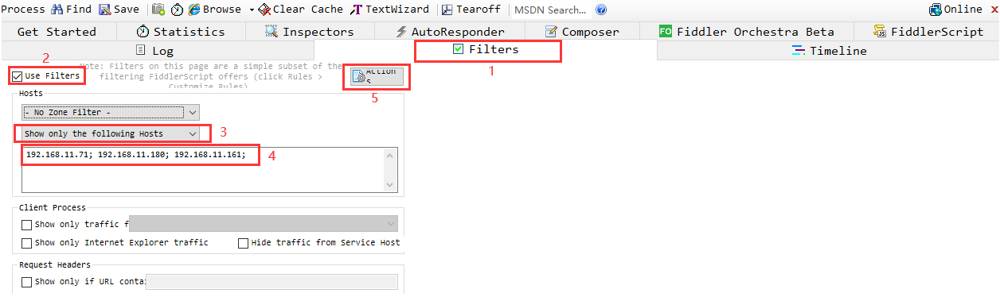
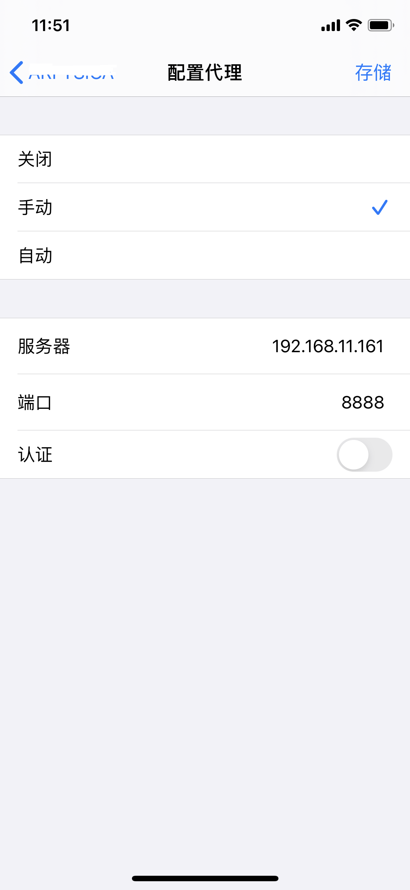
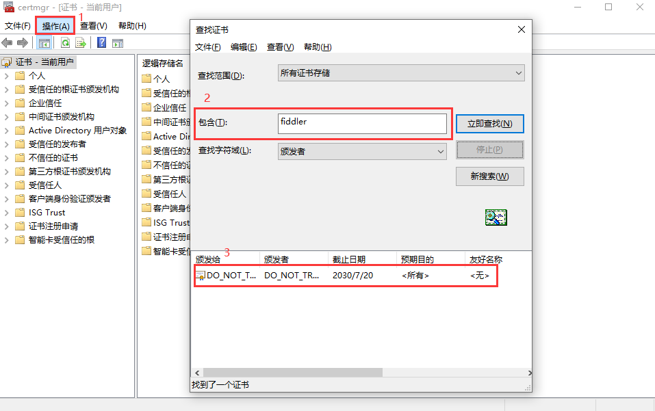
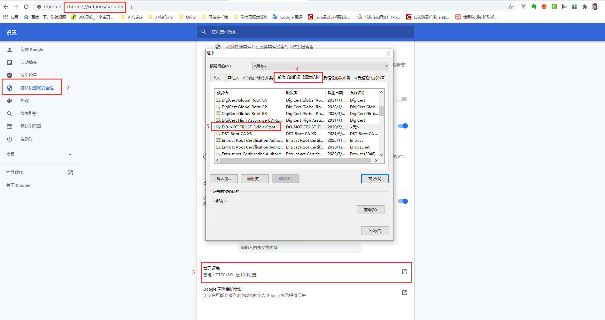
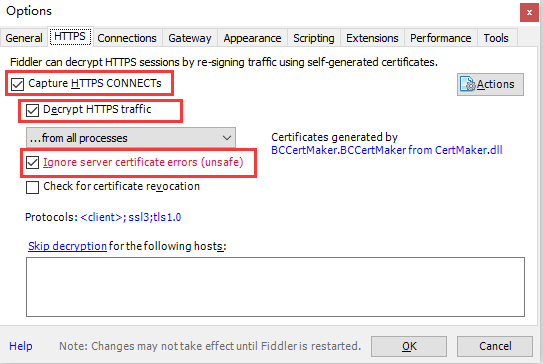
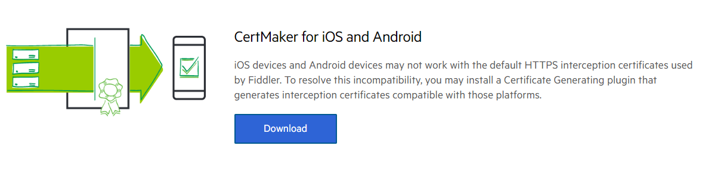
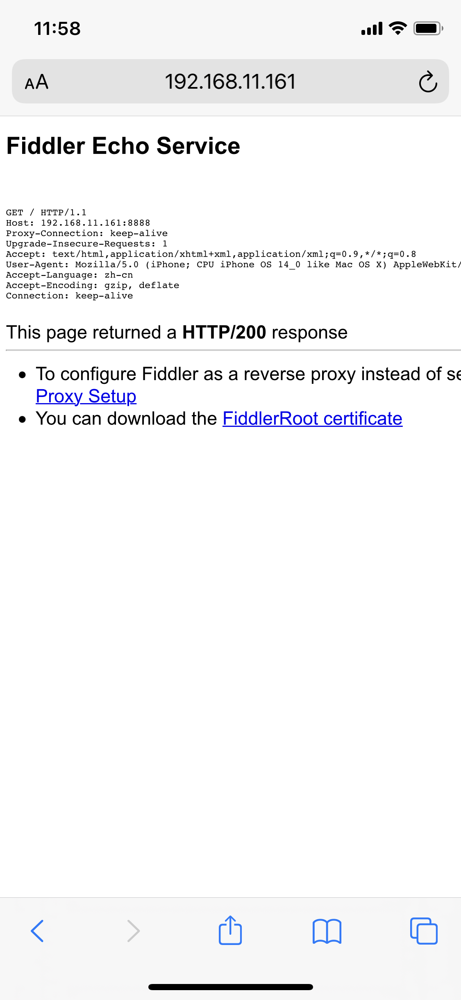
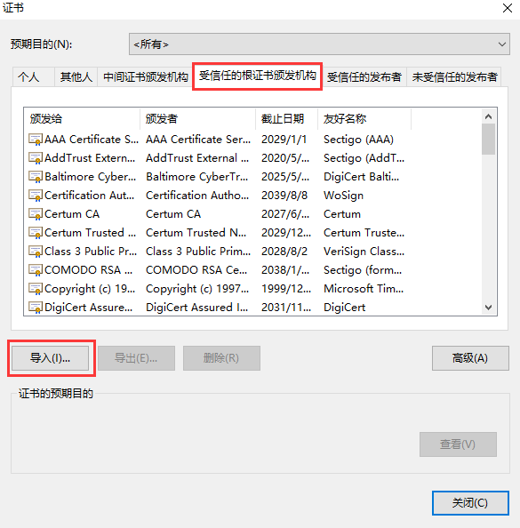

在 Web 应用中调试代码比较容易，可以使用各大浏览器的开发者工具进行调试，但是在移动设备上调试代码就可能会受限。抓包工具就很好的打破了这个局限，无论是网页应用还是移动应用，都有用武之地。Windows 系统下有 Fiddler，Mac 系统下有 Charles，它们大体类似，在这里我们只对 Fiddler 的使用做一个介绍
在开始之前请自行下载 Fiddler ，那就话不多少，直接上才艺 …
基础篇 - 实现移动设备抓包
配置 Fiddler 代理
（1）打开菜单栏的 Tools，选择第一项 Options
（2）在弹出的对话框切换至 Connections 选项，配置 Fiddler 的监听端口，勾选 “Allow romote computers to connect” 以允许连接远程设备，配置完成后点击 OK 按钮

（3）配置成功后就相当于把本机作为服务器，在你设置的端口下开启了一个服务，该服务主要的任务就是监听访问此服务器下的所有请求。另外，鼠标移入右上角的 Online 可查看本机的 IP 地址，此地址在设置移动设备的 HTTP 代理中会使用。
过滤 IP
默认情况下，Fiddler 会抓取所有访问的请求，这样可能会对抓取查看目标请求带来一定的视觉干扰，为了避免这样的干扰，可以通过设置过滤器 Filters，只过滤获取需要抓取的 IP 请求，按照下图步骤设置，设置完成后在第5步选择 “Run Filterset now”，这样左侧显出的请求就只有自己需要的请求列表了。

以苹果手机为例，设置 HTTP 代理
（1）抓取移动设备的请求前提是移动设备和配置 Fiddler 代理的设备在同一网段下
（2）进入 Wi-Fi 界面，点击已接入的 WiFi 名称，进入该网络的设置界面，找到 HTTP 代理项，选择手动模式，输入服务器 IP 和端口（具体 IP 和端口参见1.3），点击存储

进阶篇 - 抓取 Https 请求
抓取前的准备（针对已安装 Fiddler 的用户）
（1）清除 C 盘用户目录里的证书缓存，例如：C:\Users\Administrator\AppData\Roaming\Microsoft\Crypto\RSA，里面的文件全部清除
（2）清除电脑上的根证书，在运行中输入 certmgr.msc，打开菜单栏的操作按钮，选择查找证书，在包含项输入 fiddler，点击立即查找，将查找结果删除

（3）清除移动设备的证书（描述文件）。点击手机上的设备图标，选择通用，找到描述文件项，点击进入，这里就是所有已下载的描述文件的列表，找到带有 FiddlerRoot 字样的描述文件，移除描述文件
（4）进入谷歌浏览器的设置界面（输入 chrome://settings/ 直接进入），在隐私设置和安全性一栏，点击进入安全项，找到管理证书，清除带有 FiddlerRoot 字样的证书（说明：可能浏览器的版本差异，管理证书项的入口存在不同，如存在此情况请自行查找）

（5）打开 Fiddler，打开菜单栏的 Tools，选择第一项 Options，在弹出的对话框切换至 HTTPS 选项，点击 Actions，选择最后一项 “Reset All certificates”，然后关闭 Fiddler。
配置 Fiddler 支持 HTTPS
（1）打开菜单栏的 Tools，选择第一项 Options
（2）在弹出的对话框切换至 HTTPS 选项，如下图勾选相应项

抓取移动设备的 Https 请求（以苹果手机为例）
（1）Fiddler 默认生成的证书不能满足 Android 和 iOS 系统的要求，下载 CertMaker 插件到本地，双击安装以生成支持移动设备的证书

（2）配置支持 HTTPS（详参步骤2），点击 OK 按钮，期间会出现一些提示，默认都选 yes
（3）在 Safari 浏览器上输入服务器 IP 和端口，点击 FiddlerRoot certificate 链接下载 Fiddler 证书

（4）安装下载的描述文件（Fiddler 证书），将描述文件启用完全信任。点击手机上的设备图标，选择通用，找到关于本机项，点击进入，在最下面的证书信任设置里面找到带有 FiddlerRoot 字样的描述文件启用完全信任。设置完成后就可以抓取 Https 的请求了
抓取浏览器的 Https 请求（以谷歌浏览器为例）
（1）配置支持 HTTPS（详参步骤2），点击 Actions，选择第二项 “Export Root Certificate to Desktop”，在桌面会产生 “FiddlerRoot.cer” 的证书文件，点击 OK 按钮，期间会出现一些提示，默认都选 yes
（2）进入谷歌浏览器的设置界面（输入 chrome://settings/ 直接进入），在隐私设置和安全性一栏，点击进入安全项，找到管理证书，将刚才产生的证书文件导入

（3）重新打开 Fiddler，就可以抓取 Https 的请求了

如果觉得这篇博客对您有所帮助，欢迎收藏分享。如果觉得这篇博客有不足的地方，欢迎评论交流。如果博客无意侵犯了您的版权，请与作者联系以将其删除。谢谢 ！

...
...